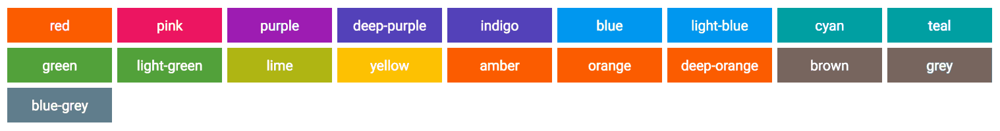
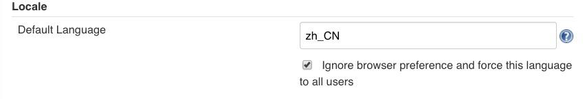
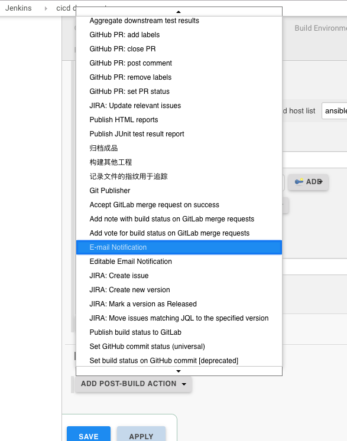
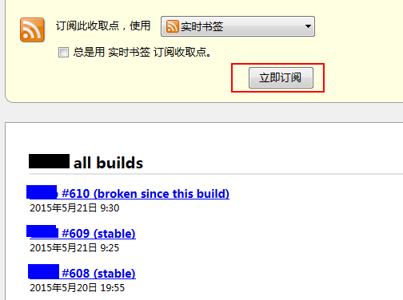
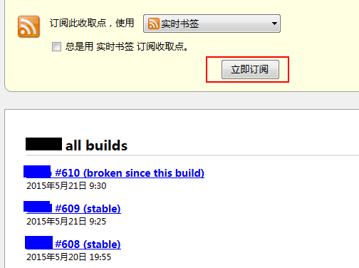
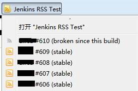
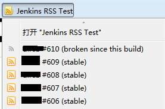
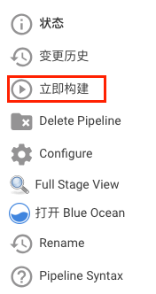
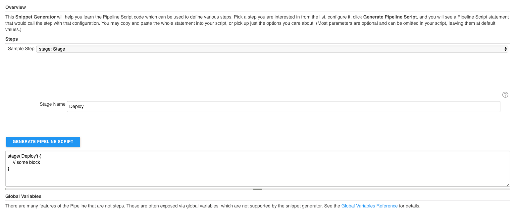

jenkins¶
持续集成¶
Continuous integration (CI) 持续集成是一种软件开发实践，即团队开发成员经常集成他们的工作，通常每个成员每天至少集成一次，也就意味着每天可能会发生多次集成。每次集成都通过自动化的构建（包括编译，发布，自动化测试）来验证，从而尽快的发现集成错误。许多团队发现这个过程可以大大减少集成的问题，让团队能够更快的开发内聚的软件。
没有持续集成的情况下：
项目做模块集成的时候，发现很多接口都不通
浪费大量时间
需要人手动去编译打包最新的代码
构建过程不透明
分布版本，上线，基本靠手
脚本乱飞
持续集成最佳实践
- 维护一个单一的代码库
- 使用构建自动化
- 执行测试是构建的一部分
- 集成日志即历史记录
- 使用统一的依赖包管理库
- 每天至少集成一次
持续集成概览
安装¶
Debian/Ubuntu¶
Jenkins 使用 java 开发，所以在部署 jenkins 之前，需要安装 jdk
sudo apt-get install openjdk-8-jre
最新版本可在apt存储库中找到，较旧但稳定的LTS版本在此apt存储库中。
wget -q -O - https://pkg.jenkins.io/debian/jenkins.io.key | sudo apt-key add -
sudo sh -c 'echo deb http://pkg.jenkins.io/debian-stable binary/ > /etc/apt/sources.list.d/jenkins.list'
sudo apt-get update
sudo apt-get install jenkins
CentOS/RHEL¶
Jenkins 使用 java 开发，所以在部署 jenkins 之前，需要安装 jdk
su -c "yum install java-1.8.0-openjdk"
最新版本可以在 rpm 存储库中找到，较旧但稳定的 LTS 版本在此 RPM 存储库中。
sudo wget -O /etc/yum.repos.d/jenkins.repo https://pkg.jenkins.io/redhat-stable/jenkins.repo
sudo rpm --import https://pkg.jenkins.io/redhat-stable/jenkins.io.key
sudo yum install jenkins
启动¶
当 Jenkins 安装完成之后，启动脚本路径为 /etc/init.d/jenkins，示例如下：
启动
$ sudo /etc/init.d/jenkins start
关闭
$ sudo /etc/init.d/jenkins stop
重启
$ sudo /etc/init.d/jenkins restart
查看帮助
$ sudo /etc/init.d/jenkins help
如果你的系统已经支持 systemd，使用 systemctl 命令管理 jenkins 更佳。
启动
$ sudo systemctl start jenkins
关闭
$ sudo systemctl stop jenkins
重启
$ sudo systemctl restart jenkins
开机启动
$ sudo syetemctl enable jenkins
插件¶
默认 plugins¶
-
该插件允许用户创建“文件夹”来组织作业。用户可以定义自定义分类（例如，按项目类型，组织类型）。文件夹是可嵌套的，您可以在文件夹中定义视图。
-
使用策略定义在用户提交的文本中允许有限的HTML标记。
-
此插件允许您在构建时间过长时自动中止构建。一旦达到超时，Jenkins就像一只无形的手点击了“中止构建”按钮。
-
允许将凭据绑定到环境变量，以便从其他构建步骤中使用。
-
将时间戳添加到控制台输出
-
用于删除构建工作区的插件。
-
这个插件为Jenkins添加了Apache Ant支持。这个功能曾经是核心的一部分，但是从Jenkins 1.431开始，它被分成了单独的插件。
-
此插件可以调用Gradle构建脚本作为主构建步骤。
-
一套插件，可让您协调自动化，简单或复杂。有关更多详细信息和文档，请参阅Jenkins网站。
Github Organization Folder Plugin
过时的插件。升级到1.6后可能会被删除。
-
管道状态查看插件
-
这个插件允许使用Git作为构建SCM，包括几个提供者的存储库浏览器。需要最近的Git运行时（最低1.7.9，建议1.8.x）。与Git运行时的交互是通过使用Git Client插件来执行的，该插件仅在官方git客户端上进行测试。使用外来设施需要您自担风险。
-
这个插件将Subversion支持（通过SVNKit）添加到Jenkins。这个插件捆绑在jenkins.war中。
-
此插件允许您通过SSH管理在
*nix机器上运行的代理程序。 Matrix Authorization Strategy Plugin
提供基于矩阵的安全授权策略（全局和每个项目）。
-
为Jenkins添加Unix可插入身份验证模块（PAM）支持。
-
这个插件是Jenkins核心的一部分，直到1.468。之后，它被拆分为可单独更新的插件。但是，出于向后兼容的目的，后续核心版本仍然捆绑它。如果你根本不使用这个插件，你可以简单地禁用它。
-
此插件允许您配置电子邮件通知的各个方面。您可以自定义何时发送电子邮件，谁应该接收电子邮件以及电子邮件所说的内容。
-
此插件允许您配置构建结果的电子邮件通知。这是原始核心电子邮件组件的突破。
常用 plugins¶
-
这个插件源自非常酷的SCP插件。您可以使用SSH插件通过ssh在远程计算机上运行shell命令。
-
这个插件是一个构建触发器，允许GitLab在推送代码或创建合并请求时触发Jenkins构建。基于每个作业完成配置。
-
一套插件，可让您协调自动化，简单或复杂。有关更多详细信息和文档，请参阅Jenkins网站。
-
这个插件允许使用Git作为构建SCM，包括几个提供者的存储库浏览器。需要最近的Git运行时（最低1.7.9，建议1.8.x）。与Git运行时的交互是通过使用Git Client插件来执行的，该插件仅在官方git客户端上进行测试。使用外来设施需要您自担风险。
-
添加从项目中配置的git存储库中选择分支，标签或修订的功能。
-
此插件接受war / ear文件，并在构建结束时将其部署到正在运行的远程应用程序服务器。实施基于Cargo。当前支持的容器列表包括：
- Tomcat 4.x/5.x/6.x/7.x
- JBoss 3.x/4.x
- Glassfish 2.x/3.x
Role-based Authorization Strategy
添加新的基于角色的策略来管理用户的权限。
-
这个插件发布 HTML 报告
-
此插件允许您从流行的测试工具中捕获报告。 Jenkins将生成具有性能和稳健性趋势报告的图表。 它包括根据报告的错误百分比将最终构建状态设置为良好，不稳定或失败的功能。
-
此插件允许您从Cobertura捕获代码覆盖率报告，Jenkins将生成覆盖率的趋势报告。
-
该插件可轻松集成SonarQube™，这是一种用于连续检查代码质量的开源平台。
-
Blue Ocean是一个重新思考Jenkins用户体验的新项目。 Blue Ocean专为Jenkins Pipeline设计并与Freestyle工作兼容，通过以下主要功能减少了团队中每个成员的混乱并提高了清晰度：
- CD管道的复杂可视化，允许快速和直观地理解软件管道状态。
- 管道编辑器，通过引导用户通过直观和可视的过程来创建管道，使自动化CD管道变得平易近人。
- Jenkins UI的个性化，以满足DevOps团队每个成员的基于角色的需求。
- 在需要干预和/或出现问题时精确定位。Blue Ocean UI 显示了需要注意的地方，便于异常处理和提高生产力。
- 分支和拉取请求的本机集成可在与 GitHub 和 Bitbucket 中的其他代码协作代码时实现最大的开发人员生产力。
插件管理¶
Jenkins 通过大量插件提供附加功能，管理 Jenkins 插件主要是安装和配置。这里主要介绍 jenkins 插件的安装，具体配置需要参考具体 Jenkins 插件的说明。
Jenkins 提供了 Update Center，可以从 Update Center 在线下载安装 Jenkins 插件。
管理 Jenkins 插件的方法主要有两种。一种是通过 Jenkins 的 Web 界面，另一种是通过 Jenkins CLI。
通过 web 界面管理插件¶
Jenkins 界面 –> System Manager –> Manager Plugins –> Available

在 Jenkins 里面点击安装后，报了如下的错误：
错误的原因是国内的网络不能访问国外的网站，遇到这种情况我们就需要手动进行安装，具体的步骤如下：
进入 Jenkins Plugins 搜索需要的插件，如下图所示：
找到需要下载的插件，进行下载

选择你要下载的版本
下载完成后，进入 jenkins 页面，点击 Systme Manager –> Manager Plugins –> Available
点击 update 按钮安装插件，之后会跳转页面
通过 Jenkins CLI 的 install-plugin 命令管理插件¶
java -jar jenkins-cli.jar -s http://localhost:8080/ install-plugin <SOURCE> ... [-deploy] [-name alias_name] [-restart]
参数说明
- SOURCE 是插件文件或插件的URL；
- -deploy 直接部署插件，无需推迟到 Jenkins 服务器重启的时候再部署插件
- -name 给插件命名别名
- -restart 安装插件后重启 jenkins 服务器
基础配置¶
什么是 jenkins?
持续集成、自动测试、持续部署的超级引擎，支持自定义工具集、多种交付通道。
镜像管理¶
Jenkins 官方提供了一个 镜像列表 ，会列出最快的镜像。
进入 Jenkins 页面，点击 Manager Jenkisn –> Manager Plugins –> Advanced
将 Update site 更换为
https://mirrors.tuna.tsinghua.edu.cn/jenkins/updates/current/update-center.json
Jenkins 目录¶
| 目录 | 内容 |
/var/lib/jenkins |
主目录 |
/var/lib/jenkins/workspace |
工作空间 |
/etc/init.d/jenkins |
启动文件 |
/etc/sysconfig/jenkins |
配置文件 |
/var/cache/jenkins |
网页文件 |
/var/log/jenkins |
日志文件 |
卡启动问题¶
Jenkins 在第一次启动的时候会向官网回传信息，如果网络在线，但是 Jenkins 不能访问 https://jenkins-ci.io 这时关闭网络，离线就能正常安装
升级¶
Jenkins 升级比较简单，我们只需要下载你需要更新版本的 war 包，替换 /usr/lib/jenkins/jenkins.war 。
停止 Jenkins 服务
Attention
记得备份原来的 jenkins.war，以防万一
替换最新的 war 包，并启动 jenkins
备份¶
tar zcvf jenkins.tar.gz /var/lib/jenkins
写一个每天定时备份的脚本，保留 15 天的备份。
#!/usr/bin/env bash
BACKUP_PATH="/opt/jenkins_backup"
JENKINS_WAR_BALL_PATH="/usr/lib/jenkins"
JENKINS_WAR_VERSION_BALL_PATH="${JENKINS_WAR_BALL_PATH}/versions"
JENKINS_HOME_PATH="/var/lib/jenkins"
BACKUP_ROTATE="5"
DATE_DAY=`date +%F`
JENKINS_REPO_URL="https://mirrors.tuna.tsinghua.edu.cn/jenkins/war/" ## TUNA
#JENKINS_REPO_URL="http://mirrors.ustc.edu.cn/jenkins/war/" ## USTC
#JENKINS_REPO_URL="http://mirrors.jenkins.io/war/" ## JENKINS
function backup_rotate() {
DELETE_DATE_DAY=`date -d "-${BACKUP_ROTATE} day ago" +%F`
if [ -f ${BACKUP_PATH}/jenkins_${DELETE_DATE_DAY}.tar.gz ]; then
rm -rf ${BACKUP_PATH}/jenkins_${DELET_DATE_DAY}.tar.gz
fi
}
function Backup() {
backup_rotate
test -d ${BACKUP_PATH} || mkdir -p ${BACKUP_PATH}
echo "[`date +'%Y-%m-%d %H:%M:%S'`] start backup"
if [ ! -f ${BACKUP_PATH}/jenkins_${DATE_DAY}.tar.gz ]; then
start_backup_second=`date +%s`
cd ${JENKINS_HOME_PATH} && tar -zcPf ${BACKUP_PATH}/jenkins_${DATE_DAY}.tar.gz .
stop_backup_second=`date +%s`
let use_time=${stop_backup_second}-${start_backup_second}
echo "[`date +'%Y-%m-%d %H:%M:%S'`] use time ${use_time}s"
echo "[`date +'%Y-%m-%d %H:%M:%S'`] file size `du -h ${BACKUP_PATH}/jenkins_${DATE_DAY}.tar.gz`"
else
echo "[`date +'%Y-%m-%d %H:%M:%S'`] Backup completed today!"
fi
echo "[`date +'%Y-%m-%d %H:%M:%S'`] stop backup"
}
function Recovery() {
find ${BACKUP_PATH} -name "jenkins*.tar.gz" | cut -d '/' -f 4 | cut -d "_" -f 2 | cut -d '.' -f 1 | nl
list_length=`find ${BACKUP_PATH} -name "jenkins*.tar.gz" | wc -l`
read -p "Select date recovery >>> " number
if grep '^[[:digit:]]*$' <<< "${number}"; then
if [ ${number} -gt $list_length -o ${number} -le 0 ]; then
echo "[`date +'%Y-%m-%d %H:%M:%S'`] The selected date does not exist!"
else
date=`find ${BACKUP_PATH} -name "jenkins*.tar.gz" | cut -d '/' -f 4 | cut -d "_" -f 2 | cut -d '.' -f 1 | sed -n ${number}p`
/etc/init.d/jenkins stop
sleep 5
rm -rf ${JENKINS_HOME_PATH}/*
tar -zvxf ${BACKUP_PATH}/jenkins_${date}.tar.gz -C ${JENKINS_HOME_PATH}
sleep 5
/etc/init.d/jenkins start
fi
else
echo "Please enter the correct number"
fi
}
function Upgrade() {
curl -s ${JENKINS_REPO_URL} | egrep -o '"[0-9]{1}.[0-9]{1,3}|"latest' | cut -d "\"" -f 2 | sort -n -k 2 -t . | nl
list_length=`curl -s ${JENKINS_REPO_URL} | egrep -o '"[0-9]{1}.[0-9]{1,3}|"latest' | cut -d "\"" -f 2 | sort -n -k 2 -t . | wc -l`
read -p "Select Jenkins Version >>> " number
if grep '^[[:digit:]]*$' <<< "${number}"; then
if [ ${number} -gt $list_length -o ${number} -le 0 ]; then
echo "[`date +'%Y-%m-%d %H:%M:%S'`] The selected version does not exist!"
else
version=`curl -s ${JENKINS_REPO_URL} | egrep -o '"[0-9]{1}.[0-9]{1,3}|"latest' | cut -d "\"" -f 2 | sort -n -k 2 -t . |sed -n ${number}p`
jenkins_war_url="${JENKINS_REPO_URL}${version}/jenkins.war"
test -d ${JENKINS_WAR_VERSION_BALL_PATH} || mkdir -p ${JENKINS_WAR_VERSION_BALL_PATH}
if [ -f ${JENKINS_WAR_VERSION_BALL_PATH}/jenkins_${version}.war -a "${version}" = "latest" ]; then
rm ${JENKINS_WAR_VERSION_BALL_PATH}/jenkins_${version}.war
wget -O ${JENKINS_WAR_VERSION_BALL_PATH}/jenkins_${version}.war ${jenkins_war_url}
elif [ -f ${JENKINS_WAR_VERSION_BALL_PATH}/jenkins_${version}.war ]; then
echo "${JENKINS_WAR_VERSION_BALL_PATH}/jenkins_${version}.war file exist"
else
wget -O ${JENKINS_WAR_VERSION_BALL_PATH}/jenkins_${version}.war ${jenkins_war_url}
fi
/etc/init.d/jenkins stop
sleep 5
cp -v ${JENKINS_WAR_VERSION_BALL_PATH}/jenkins_${version}.war ${JENKINS_WAR_BALL_PATH}/jenkins.war
sleep 5
/etc/init.d/jenkins start
fi
else
echo "Please ehter the correct number"
fi
}
case $1 in
backup)
Backup
;;
recovery)
Recovery
;;
upgrade)
Upgrade
;;
*)
echo "Usage: $0 {backup|recovery|upgrade}"
exit 1
;;
esac
设置定时任务
0 2 * * * bash /opt/jenkins_backup/jenkins_toolbox.sh backup
构建状态¶
Jenkins 会基于一些后处理器任务为构建发布一个稳健指数（从 0 ~ 100），这些任务一般以插件的方式实现。
他们可能包括单元测试（JUnit）、覆盖率（Cobertura）和静态代码分析（FindBugs）。
分数越高，表明构建越稳定。下图中分级符号概述了稳定性的评分范围。任何构建作业的状态（总分100）低于80分就是不稳定的。

| 颜色 | 状态 |
|---|---|
| 蓝色 | 完成构建，被认为是稳定构建 |
| 黄色 | 完成构建，被认为是不稳定的构建 |
| 红色 | 构建失败 |
| 灰色 | 禁用了构建 |
图例可以在 https://jenkins.renkeju.com:8080/legend 中查看
系统设置¶
工作目录设置¶
在 Linux 环境中，Jenkins 的默认工作目录在 /var/lib/jenkins/，但是我们有些需要特殊指定工作目录的项目，需要默认的 JENKINS_HOME 分开。
进入一个项目，在【Genaral】里点击“高级”按钮

配置指定自定义工作目录空间，但是需要特别注意目录权限

nginx 反向代理 Jenkins¶
nginx 反向代理 jenkins 配置
upstream jenkins_server { server 127.0.0.1:8080 fail_timeout=0; } server { listen 80; server_name jenkins.example.com; access_log /var/log/nginx/jenkins/access.log; error_log /var/log/nginx/jenkins/error.log; location / { proxy_set_header Host $host:$server_port; proxy_set_header X-Real-IP $remote_addr; proxy_set_header X-Forwarded-For $proxy_add_x_forwarded_for; proxy_set_header X-Forwarded-Proto $scheme; proxy_pass http://jenkins_server; } }nginx 反向代理 jenkins ssl 配置
upstream app_server { server 127.0.0.1:8080 fail_timeout=0; } server { listen 80; server_name jenkins.example.com; return 301 https://$host/$request_uri; } server { listen 443 ssl; server_name jenkins.example.com; access_log /var/log/nginx/jenkins/access.log; error_log /var/log/nginx/jenkins/error.log; location / { proxy_set_header Host $host:$server_port; proxy_set_header X-Real-IP $remote_addr; proxy_set_header X-Forwarded-For $proxy_add_x_forwarded_for; proxy_set_header X-Forwarded-Proto $scheme; proxy_redirect http:// https://; proxy_pass http://app_server; } }Attention
- 重启nginx或重新加载nginx配置之前，需要创建
/var/log/nginx/jenkins目录，否则nginx启动失败并报错。 - 配置完成后，访问 web 页面，还是会报出“反向代理设置有误”，这是因为之前我们通过 8080 端口访问 Jenkins，当使用 Nginx 进行反向代理后，在【系统管理】–> 【系统设置】的 jenkins URL 配置中还是 8080 端口，我们需要更改为 nginx 所指定的端口号。
- 重启nginx或重新加载nginx配置之前，需要创建
主题设置¶
Jenkins 自带的样式比较丑，我们也有很多第三方样式库可以选择，这里我们介绍 jenkins-material-theme
选择主题颜色
将 URL 中的
{{your-color-name}}更换为你选择的颜色:https://cdn.rawgit.com/afonsof/jenkins-material-theme/gh-pages/dist/material-{{your-color-name}}.css点击
Manager Jenkins点击
Configure System并找到Theme使用第三方的CSS样式有两种方式
- 添加
CSS URL，将字段设置为生成的 CSS URL - 下载 URL 的 CSS 样式文件，将文件内容黏贴入
Extra CSS
- 添加
点击
Save
语言设置¶
重启生效
配置【Manage Jenkins】–>【Configure System】->【Locale】
默认语言设置为 zh_CN，勾选强制语言设置。
通知¶
虽然使用构建服务器构建你的软件是重要的事情，但更重要的是让人们知道你的构建服务器不能做那些。任何持续集成环境价值命题的一个关键部分是提高项目健康状况的信息流程，比如单元测试或者集成测试套件回归测试失败，又或者其他质量相关的下降问题，比如代码覆盖率或者是代码质量度量。在所有情况下，CI 服务器必须尽可能快的让相关人员知晓发生的任何问题。这就是我们所说的通知。
这两种主要类别的通知策略，我们称之为被动策略呵主动策略（拉/pull或推/push）。被动通知（拉）需要开发者自觉的查阅最新的构建状态，包括 RSS 源、构建消息分发器及（某些范围内的）电子邮件。主动通知（推）在构建失败时会主动提醒开发人员，并且包括诸如桌面通知、聊天工具和短信等方法。这两种方法各有优缺点。被动的通知策略，如构建消息分发器可以提高公众关于失败的构建意识，并且能帮助建立将修复失败构建提升为高优先级处理的团队文化。更直接形式的通知形式可以积极鼓励开发人员通过自己的双手更快的修复中断的构建。
配置邮件服务器¶
email 是 Jenkins 最基本的通知技术 —— 在一个构建失败后，他将给提交代码变更的开发人员及可选的其他团队成员发邮件。所以，Jenkins 需要知道你的邮件服务器。

系统管理员的 email 地址是 Jenkins 发送通知的邮件发送方。你还可以单击 Test configure（测试配置）按钮来检测它，Jenkins 会发送一个测试邮件到这个地址。
Jenkins 还提供了更复杂的邮件配置，使用如 SMTP 认证和 SSL 等高级特性。可以通过 Advanced（高级）按钮来配置这些选项。

配置成功后，我们可以到 job 中进行配置：

增强版电子邮件通知¶
Email-ext 插件允许你定一个更精致的电子通知策略。这个插件增加了一个 Editable Email Notification 复选框，从而有效的取代了标准的 Jenkins 电子邮件通知。在这里，你可以定义默认收件人列表为微调的电子邮件内容，而且还定义一个更精确的通知策略（不同的事件用不同的消息和收件人列表。）请主意，一旦你已经为构建作业安装、配置此插件，就可以停用正常的电子邮件配置。
这个插件由两个相关但不同的功能。首先，它可以让你自己定义电子邮件通知消息。你可以从大量的预定义的标签中选择创建自己的自定义邮件的标题和正文。你可以使用熟悉的美元符号（如 ${BUILD_NUMBER} 或 $BUILD_BUMBER ）在消息模版中包括标签。一些标签接收参数，你可以指定使用 name=value 格式（如 ${BUILD_LOG, maxLines=100} 或 ${ENV, var=”PATH”}）。其中更有用的标签如下：
${DEFAULT_SUBJECT}
在 Jenkins 系统配置页面配置的默认电子邮件主题
${DEFAULT_CONTENT}
Jenkins 系统配置页面配置的默认电子邮件内容
${PROJECT_NAME}
项目的名称
${BUILD_NUMBER}
当前构建号
${BUILD_STATUS}
当前构建状态
${CAUSE}
构建原因
${BUILD_URL}
Jenkins 对应构建作业页面的链接
${FAILED_TESTS}
如果失败的话，显示有关失败的单元测试信息
${CHANGES}
显示自上次构建以来所做的修改
${CHANGES_SINCE_LAST_SUCCESS}
自从上次成功构建以来所做的所有参数
通过单击 Context Token Reference 标签相对的 Help 图标，你可以得到可用的标识的完整列表以及其可以接收参数的选项。

- SMTP server : SMTP 服务器地址
- Default user E-mail suffix : 默认用户邮件后缀
- 勾选 Use SMTP Authentication : 用户名和密码填自己的
- 勾选 Use SSL : 则 SMTP port 端口改为 465
- SMTP port : 默认端口 25
- Default Content Type : 邮件文档类型
- Default Recipoents : 默认接收人列表，用逗号进行分割
Attention
上面配置中，凡是以 Default 开头的名称，都可以在 job 的配置中当做变量使用。比如：默认的收件人地址。
在 增加构建后的操作步骤，添加增强版邮件通知


Note
原本默认是 Developer List，这个默认是一个官方的错误。请自行添加一个 Recipient List，否则接收不到邮件。
Disabke Extended Email Publisher
勾选后，邮件就不发送，看自己的情况，如果你想调试某些东西，又不想发邮件出去就可以勾选这个。
Project Recipient List
收件人地址，多个收件人邮件地址用都好进行分割；项使用全局默认配置的话，可以使用 $DEFAULT_RECIPIENTS
Project Reply-To List
允许回复人的地址；想使用系统设置中的默认值的话，可以使用 $DEFAULT_REPLYTO
Content Type
邮件文档的类型，可以设置 HTML 等格式
Default Subject
默认主题，也就是邮件标题；同理可以使用 $DEFAULT_SUBJECT
Default Content
默认邮件内容，这是关键。你可以自定义模版
${SCRIPT, template="groovy-html.template"}如果不想使用模版的话，可以通过使用 Jenkins 自身提供的变量来定义。Attach Build Log
发送的邮件是否包含日志
Triggers
假设最后一个不修改的话，邮件是接收不到的，这是官方留下的一个大坑，一定要自己再添加一个 Recipient List
邮件模版编写¶
官方给出的 groovy 模版
在 email-templates 文件夹中创建一个文件
mkdir -p /var/lib/jenkins/email-templates
cd /var/lib/jenkins/email-templates
wget https://raw.githubusercontent.com/jenkinsci/email-ext-plugin/master/src/main/resources/hudson/plugins/emailext/templates/groovy-html.template
之后你可以根据自己的需要进行定制修改。
之后在 【系统管理】中选择【系统设置】，下拉到 Extended E-mail Notification，在 Default Content 框内输入 ${SCRIPT, template="groovy-html.template"}。
当项目执行结束后，你就可以收到如下这样的邮件：
RSS 订阅¶
Jenkins 的主要功能之一，Jenkins 集成了 RSS 的通知机制 对于 Jenkins 的 RSS 构建通知，有 Job 级别的 RSS 构建通知和 View 级别的 RSS 构架通知：
- 可以订阅某个 Job 的构建情况
- 也可以额订阅一组 Job（比如一个 View 下的所有 Job）的构建情况
Job 级别的 RSS 构建通知¶
对于每个 Job，在它的 Build History（构建历史）下侧，有两个 RSS 链接：RSS for all、RSS for failures
其中，每个RSS链接的路径如下：
- RSS 全部的链接路径为：<JENKINS_URL>/job/<JOB_NAME/rssaAll
- RSS 失败的链接路径为：<JENKINS_URL>/job/<JOB_NAME>/rssFailed
View 级别的 RSS 构建通知¶
对于每个 View，在 View 的右下方，有三个 RSS 链接： RSS for all、RSS for failures、RSS for just latest builds

其中，每个 RSS 链接路径如下：
- RSS 全部的链接路径为：<JENKINS_URL>/view/<VIEW_NAME>/rssaAll
- RSS 失败的链接路径为：<JENKINS_URL>/view/<VIEW_NAME>/rssFailed
- RSS 最新的构建的链接路径为：<JENKINS_URL>/view/<VIEW_NAME>/rssLatest
浏览器订阅实施构建通知¶
Firefox 浏览器，有 RSS 收阅功能，称为实时书签，无需安装任何插件。
下面使用 Firefox 的实时书签进行 RSS 订阅 Jenkins 某个 Job 的情况为例：
点击 Jenkins 某个 Job 下 RSS 全部链接，会跳转到 <JENKINS_URL>/job/<JOB_NAME>/rssAll 页面
 


默认订阅方式为实时标签，点击立即订阅即可，弹出如下对话框，设置名称及选择文件夹，点订阅后，在书签工具栏便会显示实时书签
 

点击相应的链接便可访问，其中灰色图标表示已阅读状态，橙色图标表示等待阅读状态。
pipeline¶
介绍¶
本章将介绍Jenkins Pipeline的所有方面，从运行Pipeline到写入Pipeline代码，甚至扩展Pipeline本身。
什么是 Pipeline¶
Jenkins Pipeline是一套插件，支持将连续输送Pipeline实施和整合到Jenkins。Pipeline提供了一组可扩展的工具，用于通过PipelineDSL为代码创建简单到复杂的传送Pipeline。
通常，此“Pipeline代码”将被写入 Jenkinsfile项目的源代码控制存储库，例如：
Jenkinsfile (Declarative Pipeline)
pipeline {
agent any
stages {
stage('Build') {
steps {
sh 'make'
}
}
stage('Test') {
steps {
sh 'make check'
junit 'reports/**/*.xml'
}
}
stage('Deploy') {
steps {
sh 'make publish'
}
}
}
}
- agent 表示 Jenkins 应该为 Pipeline 的着一部分分配一个执行者和工作区
- stage 描述这条 Pipeline 的第一个阶段
- steps 描述了要在其中运行的步骤 stage
- sh 执行给定的 shell 命令
- junit 是由 JUnit 插件提供的，用于聚合测试报告的 Pipeline 步骤
为什么是 Pipeline¶
Jenkins 从根本上讲是一种支持多种自动化模式的自动化引擎。Pipeline 在 Jenkins 上添加了一套强大的自动化工具，支持从简单的连续集成到全面的连续输送 Pipeline 的用例。通过建模一系列相关任务，用户可以利用 Pipeline 的许多功能：
- 代码：Pipeline 以代码的形式体现，通常被检入源代码控制，是团队能够编辑，审查和迭代器传送流程。
- 耐用：Pipeline 可以计划和计划外重新启动 Jenkins 管理时同时存在。
- Pausable：Pipeline 可以选择停止并等待人工输入或批准，然后在继续 Pipeline 运行。
- 多功能：Pipeline 支持复杂的现实世界连续交付要求，包括并行分叉/连接，勋和和执行工作的能力。
- 可扩展：Pipeline 插件支持其 DSL 的自定义扩展以及与其他插件集成的多个选项。
虽然 Jenkins 一直允许基于形式的自由式工作联合起来的执行顺序任务，Pipeline 使这个概念成为 Jenkins 的最好的一个部分。 基于 Jenkins 的核心可扩展性，Pipeline 也可以由 Pipeline 共享库用户和插件开发人员扩展。 下面的流程图是在 Jenkins Pipeline 中容易建模的一个连续发货方案的示例：
Pipeline 条件¶
step¶
单一任务，从基础中告诉了 Jenkins 应该怎么做。例如，要执行 shell 命令，请 make 使用一下 sh 步骤： sh 'make' 。当插件扩展 Pipeline DSL 时，通常意味着插件已经实现了一个新的步骤。
Node¶
Pipeline 执行中的大部分工作都是一个或多个声明 node 步骤的上下文中完成的。将工作限制在 Node 步骤中有两件事情：
- 通过将项目添加到 Jenkins 队列来带调度要运行的块中包含的步骤。一旦执行器在节点上空闲，步骤就会运行。2. 创建工作区（特定与该特定 Pipeline 的目录），可以从源代码控制中检出文件完成工作。
Note
根据您的 Jenkins 配置，某些工作空间在一段时间不活动后可能无法自动清除。
Stage¶
stage 是定义整个 Pipeline 的概念上不同子集的一个步骤，例如：“Build”，“Test”和“Deploy”，许多插件用于可视化或呈现Jenkins Pipeline 状态/进度。
入门¶
Jenkins Pipeline 是一套插件，支持将连续输送 Pipeline 实施和整合到 Jenkins。Pipeline 提供了一组可扩展的工具，用于通过 Pipeline DSL 为代码创建简单到复杂的传送 Pipeline。
本节介绍 Jenkins Pipeline 的一些关键概念，并帮助介绍在运行的 Jenkins 实例中定于和使用 Pipelines 的基础知识。
Pipeline 定义¶
脚本 Pipeline 是用 Groovy 写的。Groovy 语法的相关位将在本文档中根据需要进行介绍，因此，当了解 Groovy 时，不需要使用 Pipeline。 可以通过以下任一方式创建基本 Pipeline：
- 直接在 Jenkins 网页界面中输入脚本
- 通过创建一个 Jenkinsfile 可以检入项目的源代码管理库
用任一方法定义 Pipeline 的语法是一样的，但是 Jenkins 支持直接进入 Web UI 的 Pipeline，通常认为最佳实践是在 Jenkinsfile Jenkins 中直接从源代码控制中加载 Pipeline。
在 Web UI 中定义 Pipeline¶
要在 Jenkins Web UI 中创建基本 Pipeline，请按照下列步骤操作：
单击 Jenkins 主页上的 New Item

输入 Pipeline 的名称，选择 Pipeline，然后单击确定。
Attention
Jenkins 使用流水先的名称在磁盘上创建目录。包含空格的管道名称可能会发现不希望路径包含空格的脚本中的错误。

在脚本文本区域中，输入 Pipeline，然后单击保存。

单击立即构建可以运行 Pipeline
单击“构建历史记录”下的 #1，然后单击控制台输出可以查看 Pipeline 的完整输出。

上面的示例显示了在 Jenkins Web UI 中创建的基本 Pipeline 的成功运行，使用两个步骤：
Jenkinsfile (Scripted Pipeline) node { echo 'Hello World' }- node 在jinkins 环境中分配一个执行器和工作空间
- echo 在控制台输出中写入简单的字符串
在 SCM 中定义管道¶
复杂的 Pipeline 难以在 Pipeline 配置页面的文本区域内进行写入和维护。为了使这更容易，Pipeline 也可以在文本编辑器中，并检查源控件，作为 Jenkinsfile，Jenkins 可以通过 Pipeline 脚本从 SCM 选项加载的控件。 为此，在定义 Pipeline 时，从 SCM 中选择 Pipeline 脚本。 选择 SCM 选项中的 Pipeline 脚本后，不要在 Jenkins UI 中输入任何 Groovy 代码；您只需要制定要从其中检索 Pipeline 的源代码的路径。更新制定的存储库中，只要 Pipeline 配置了 SCM 轮询触发器，就会触发一个新构建。
Note
文本编辑器，IDE，GitHub 等将使用 Groovy 代码进行语法高亮显示，第一行 Jenkinsfile 应该是
#!/usr/bin/env groovy Jenkinsfile
内置文档¶
Pipeline 配有内置的文档功能，可以更轻松地创建不同复杂性的 Pipeline。根据 Jenkins 实例中安装的插件自动生成和更新内置文档。 内置文档可以在全局范围找到： http://localhost:8080/pipeline-syntax/ 假设你有一个 Jenkins 实例在本地端口 8080 上运行。同样的文档也作为管道语法链接到任何配置的 Pipeline 的侧栏项目中。

代码段生成器¶
内置的 “Snippet Generator” 实用程序有助于为单个步骤创建一些代码，发现插件提供的新步骤，或为特定步骤尝试不同的参数。
Snippet Generator 动态填充 Jenkins 实例可用的步骤列表。可用的步骤数量取决于安装的插件，它明确地暴露了在 Pipeline 中使用的步骤。
要使用代码段生成器生成步骤代码片段：
在配置的流水线或 http://localhost:8080/pipeline-syntax 导航到 Pipeline 语法链接。
在“样品步骤”下拉惨菜单中选择需要的步骤
使用 “样品步骤”下拉列表下方的动态填充区域配置所选步骤。
单击生成 Pipeline 脚本以创建一个可以复制并黏贴到 Pipeline 中 Pipeline 代码段。
要访问有关所选步骤的其他信息和/或文档，请单机帮助图标（由上图中的红色箭头指示）
全局变量引用¶
处理代码片段生成器之外，Pipelin 还提供了一个内置的”全局变量引用“。像 Snippet Generator 一样，它也是由插件动态填充的，与代码段生成器不同的是，全局变量引用仅包含 Pipeline 提供的变量的文档，这些变量可用于 Pipeline。
在 Pipeline 中默认提供的变量是：
ENV
脚本化 Pipeline 可访问的环境变量，例如：
env.PATH或env.BUILD_ID。请参阅内置的全局变量参考，以获取管道中可用的完成和最新的环境变量列表。PARAMS
将为 Pipeline 定义的所有参数公开为只读地图，例如：
params.MY_PARAM_NAMEcurrentBuild
可用于发现有关当前正在执行的 Pipeline 信息，于如属性
cureenBuild.result，currentBuild.displayName等等请教内置的全局变量引用了一个完整的，而且是最新的的，可用的属性列表currentBuild。
jenkinsfile 使用¶
本节基于 “Jenkins 入门” 中介绍的信息，并介绍更有用的步骤，常见的模式，并演示一些非平凡的 Jenkinsfile 示例。
创建一个 Jenkinsfile 被检入源代码控制，提供了一些直接的好处：
- Pipeline 上的代码审查/迭代
- Pipeline 的审计跟踪
- Pipeline 的唯一真实来源，可以由项目的多个成员查看和编辑。
Pipeline 支持两种语法：Declarative（在 Pipeline 2.5 中引入）和 Scripted Pipeline。两者都支持建立连续输送 Pipeline。两者都可以用于在 Web UI 或者 a 中定义一个流水线 Jenkinsfile，尽管通常被认为是 Jenkinsfile 将文件创建并检查到源代码控制库中的最佳做法。
创建 Jenkinsfile¶
如”入门“部分所述， Jenkinsfile 是一个包含 Jenkins Pipeline 定义的文本文件，并被检入源代码控制，考虑以下 Pipeline，实施基本的三个阶段连续输送 Pipeline。
Jenkinsfile (Declarative Pipeline)
pipeline {
agent any
stages {
stage('Build') {
steps {
echo "Building.."
}
}
stage('Test') {
steps {
echo "Testing.."
}
}
stage("Deploy") {
steps {
echo "Deploying...."
}
}
}
}
Toggle Scripted Pipeline (Advanced)
node {
stage('build') {
echo 'Building....'
}
stage('Test') {
echo 'Testing....'
}
stage('Deploy') {
echo 'Deploying....'
}
}
并非所有的 Pipeline 都将具有相同的三个阶段，但是对于大多数项目来说，这是一个很好的起点。以下部分将演示在 Jenkins 的测试安装中创建和执行简单的 Jenkins。
Note
假设已经有一个项目的源代码管理库，并且已经在 Jenkins 中按照这些说明定义了一个 Jenkins。
使用文本编辑器，理想的是支持 Groovy 语法突出显示文本编辑器，项目的根目录中创建一个新的 Jenkinsfile。
上述声明性 Pipeline 示例包含实现连续传送 Pipeline 的最小必要结构。需要的代理指令指示 Jenkins 为 Pipeline 分配一个执行器和工作区。没有 agent 指令，不仅声明 Pipeline 无效，所以不能做任何工作！默认情况下，该 agent 伪指令确保源存储库已被检出并可用于后续阶段的步骤。
该阶段的指令，和步骤的指令也需要一个有效的声明 Pipeline，因为他们指示 Jenkins 如何执行并在哪个阶段应该执行。
Note
要使用 Scripted Pipeline 进行更高级的使用，上面的示例 node 是为 Pipeline 分配执行程序和工作空间的关键第一步。在本质上，没有 node Pipeline 不能做的工作！从内部 node，业务的第一个顺序是检查此项目的源代码。由于 Jenkinsfile 直接从源代码控制中抽取，所以 Pipeline 提供了一种快速简便的方式来访问源代码的正确版本
Jenkinsfile (Scripted Pipeline)
node {
checkout scm
/* .. snip .. */
}
checkout 步骤将检出从源控制代码；scm 是一个特殊边领，指示 checkout 步骤克隆触发此 Pipeline 运行的特定修订。
建立¶
对于许多项目，Pipeline “工作” 的开始就是“构建”阶段。通常，Pipeline 在这个阶段将是源代码组装，编译或打包的过程。Jenkinsfile 中有不是现有的构建工具，如 GNU/make，Maven，Gradle 等的替代品，而是可以被看作是一个胶层结合项目的开发生命周期的多个阶段（构建，测试，部署等）一起。
Jenkinsfile (Declarative Pipeline)
pipeline {
agent any
stages {
stage('Build') {
steps {
sh 'make'
archiveArtifacts artifacts: '**/target/*.jar', fingerprint: true
}
}
}
}
- 该 sh 步骤调用 make 命令，只有在命令返回退出代码零时才会继续下一步。pipeline中任何不为零的退出代码都属于失败。
- archiveArtifacts 捕获与 include pattern(
**/target/*.jar) 匹配文件，并将他们保存到 Jenkins 主文件以供后面检索。
Attention
存档工件不能替代使用诸如 artifactory 或 Nexus 之类的外部工件存储库，只能用于基本报告和文件归档。
测试¶
运行自动化测试是任何成功的连续传送过程的重要组成部分。因此，Jenkins 有许多插件提供的测试记录，报告和可视化设备。在基本层面上，当有测试失败时，让 Jenkins 在 Web UI 中记录报告和可视化的故障是有用的。下面的示例使用 junit 由 JUnit 插件提供的步骤。
在下面的示例中，如果测试失败，则Pipeline 被标记为“不稳定”，如 Web UI 中的黄色球。根据记录的测试报告，Jenkins 还可以提供历史趋势分析和可视化。
Jenkinsfile (Declarative Pipeline)
pipeline {
agent any
stages {
steps {
/* `make check` returns non-zero on test failures,
* using `true` to allow the Pipeline to continue nonetheless
*/
sh 'make check || true'
junit '**/target/*.xml'
}
}
}
Toggle Scripted Pipeline (Advanced)
Jenkinsfile (Scripted Pipeline)
node {
/* .. snip .. */
stage('Test') {
/* `make check` returns non-zero on test failures,
* using `true` to allow the Pipeline to continue nonetheless
*/
sh 'make check || true'
junit '**/target/*.xml'
}
/* .. snip .. */
}
- 使用内联 shell conditional(sh ‘make check || true’) 确保该 sh 步骤始终看到退出代码零，从而使该 junit 步骤有机会捕获和处理测试报告。下面的“故障处理”部分将详细介绍其他方法。
- junit 捕获并关联与包含 pattern(
**/target/*.xml) 匹配的 JUnit XML 文件
部署¶
部署可能意味着各种步骤，具体取决于项目或组织的要求，并且可能是从构建的工件发送到 Artifactory 服务器，将代码推送到生产系统的任何步骤。
在 Pipeline 示例的这个阶段，“构建”和“测试”阶段都已成功执行。实际上，“部署”阶段只能在上一阶段完成，否则 Pipeline 将提前退出。
Jenkinsfile (Declarative Pipeline)
pipeline {
agent any
stages {
stage('Deploy') {
when {
expression {
currentBuild.result == null || currentBuild.result == 'SUCCESS'
}
}
steps {
sh 'make publish'
}
}
}
}
Toggle Scripted Pipeline (Advanced)
Jenkinsfile (Scripted Pipeline)
node {
/* .. snip .. */
stage('Deploy') {
if (currentBuild.result == null || currentBuild.result == 'SUCCESS') {
sh 'make publish'
}
}
/* .. snip .. */
}
- 访问该
currentBuild.result变量允许 Pipeline 确定是否有任何测试失败。在这种情况下，值将是UNSTABLE。
假设一切都在 Jenkins Pipeline 示例中成功执行，每个成功的 Pipeline 运行都将会存档关联构建工件，报告的测试结果和完整的控制台输出全部放在 Jenkins 中。
Note
脚本 Pipeline 可以包括条件测试（如上所示），循环，try/catch/finally 块甚至函数。下一节将详细介绍这种高级脚本 Pipeline 语法。
管道高级语法¶
字符串插值¶
Jenkins Pipeline 使用于 Groovy 相同的规则进行字符串插值。Groovy 的字符串插值支持可能会让很多新来的语言搞到困惑。虽然 Groovy 支持使用单引号或双引号声明一个字符串，例如：
def singlyQuoted = 'Hello'
def doublyQuoted = "World"
只有后一个字符串将支持基于 dollar-sign($) 的字符串插值，例如：
def username = 'Jenkins'
echo 'Hello Mr. ${username}'
echo "I said, Hello Mr. ${username}"
会导致
Hello Mr. ${username}
I said, Hello Mr. Jenkins
了解如何使用字符串插值对于使用一些管道更高级的功能至关重要。
工作环境¶
Jenkins Pipeline 通过全局变量公开环境变量，该变量 env 可以从任何地方获得 Jenkinsfile。假设 Jenkins 主机正在运行，在 http://localhost:8080/pipeline-syntax/globals#env 中记录了可从 Jenkins Pipeline 中访问的环境变量的完整列表 localhots:8080，其中包括：
BUILD_ID
当前版本ID，与 Jenkins 版本 1.597+ 中创建的构建相同，为 BUILD_NUMBER
JOB_NAME
此构建项目的名称，如 “foo” 或 “foo/bar”
JENKINS_URL
完整的 Jenkins 网址，例如 example.com:port/jenkins/ (注意：只有在“系统配置”中设置了 Jenkins 网址时才可用)
参考或使用这些环境变量可以像访问 Groovy Map 的任何键一样，例如：
Jenkinsfile (Declarative Pipeline)
pipeline {
agent any
stages {
stage('Example') {
steps {
echo "Running ${env.BUILD_ID} on ${env.JENKINS_URL}"
}
}
}
}
Toggle Scripted Pipeline (Advanced)
Jenkinsfile (Scripted Pipeline)
node {
echo "Running ${env.BUILD_ID} on ${env.JENKINS_URL}"
}
设置环境变量¶
根据是否使用 Declarative 或 Scripted Pipeline，在 Jenkins Pipeline 中设置环境变量是不同的。 声明式 Pipeline 支持环境指令，而 Scripted pipeline 的用户必须使用该 withEnv 步骤。
Jenkinsfile (Declarative Pipeline)
pipeline {
agent any
environment {
CC = 'clang'
}
stages {
stage('Example') {
environment {
DEBUG_FLAGS = '-g'
}
steps {
sh 'printenv'
}
}
}
}
Toggle Scripted Pipeline (Advanced)
Jenkinsfile (Scripted Pipeline)
node {
/* .. snip .. */
withEnv(["PATH+MAVEN=${tool 'M3'}/bin"]) {
sh 'mvn -B verify'
}
}
- environment 顶级 pipeline 块中使用的指令将适用于 Pipeline 中的所有步骤。
- 在一个 environment 意图中定义的一个指令 stage 仅将给定的环境变量应用与该过程中的步骤 stage